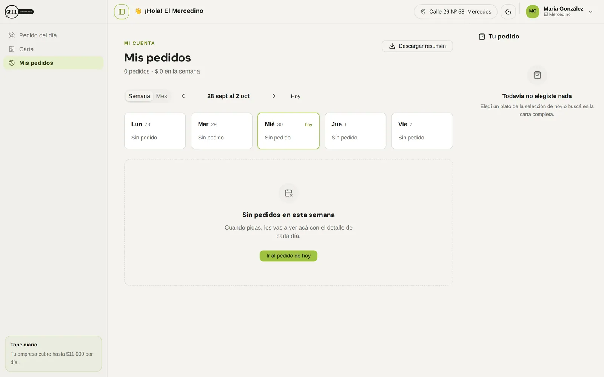
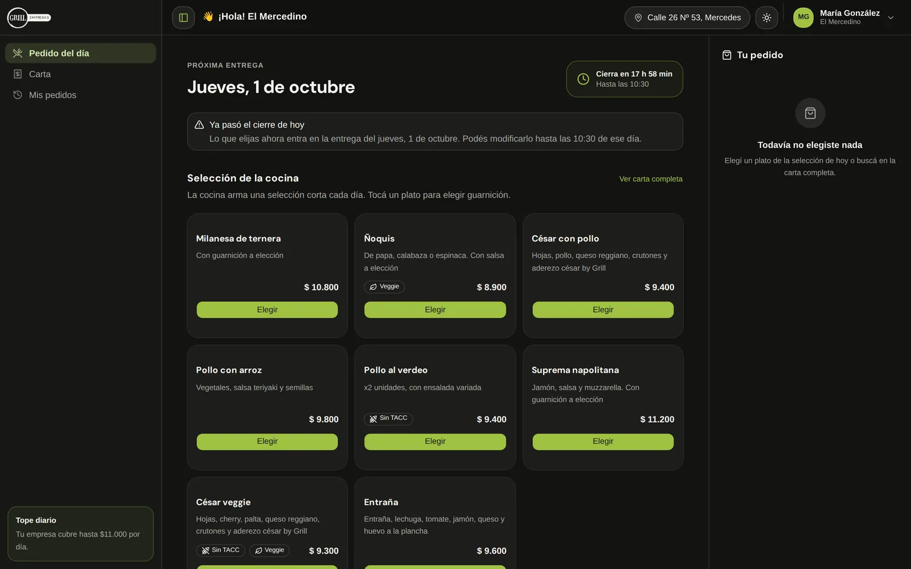

GRILL Empresas
Lunch for companies, ordered from the phone. Two connected web apps for a kitchen in Mercedes: one for the people who eat, one for the team that cooks.
Demo: sign in with any email and password.
Lunch for companies, ordered from the phone. Two connected web apps for a kitchen in Mercedes: one for the people who eat, one for the team that cooks.
Demo: sign in with any email and password.
GRILL is a kitchen in Mercedes, Buenos Aires that delivers lunch to companies. Each company covers a daily amount per employee and pays at the end of the month; each employee chooses what they eat.
I designed both sides of the service and built them as working web apps with an AI-assisted workflow: GRILL Empresas for employees and GRILL Team, the panel the kitchen runs the day from.
Kitchen tickets, orders per company, new employee accounts and the monthly account closing. Every day the team gathers choices, counts dishes, labels trays, plans the delivery run and keeps each company’s account, all before 11:30.
Make ordering take less than a minute, and turn the kitchen’s morning into a checklist.
The screen opens on the next delivery date and a countdown to the 10:30 cutoff. When today’s cutoff has passed, a banner says the order goes to the next delivery and can be changed until 10:30 that day.

Tapping a dish opens a sheet to pick the side and leave a note for the kitchen, up to 140 characters. The button carries the price, so there’s no surprise at checkout. The full menu has 59 dishes in 9 categories, filtered by gluten-free and vegetarian.


My orders shows the week or month day by day, with a summary to download. The app has a dark theme, and the copy talks the way people in Mercedes do: “Elegí”, “Tocá”, “¿La olvidaste?”.


Units, orders and companies at the top with the departure time; below, one card per job of the morning and the alerts still to resolve.

Every order added up by dish and side, grouped by category, with a checkbox to tick as each one is cooked. It prints as the day’s ticket.

Each tray gets a label on a sheet of 70 × 25.4 mm labels. “Start from” reuses a half-used sheet by tapping the first free cell, and a note reminds the team to print at real size so labels don’t shift off the die cut.


Employees don’t sign up on their own: their company creates the account. The login says so, tells them who to ask and offers companies a proposal. The kitchen has its own internal entrance, with a link back for employees who land there by mistake.


Both apps share the GRILL wordmark, the lime accent and the same components, so the kitchen and its clients read the same order the same way.